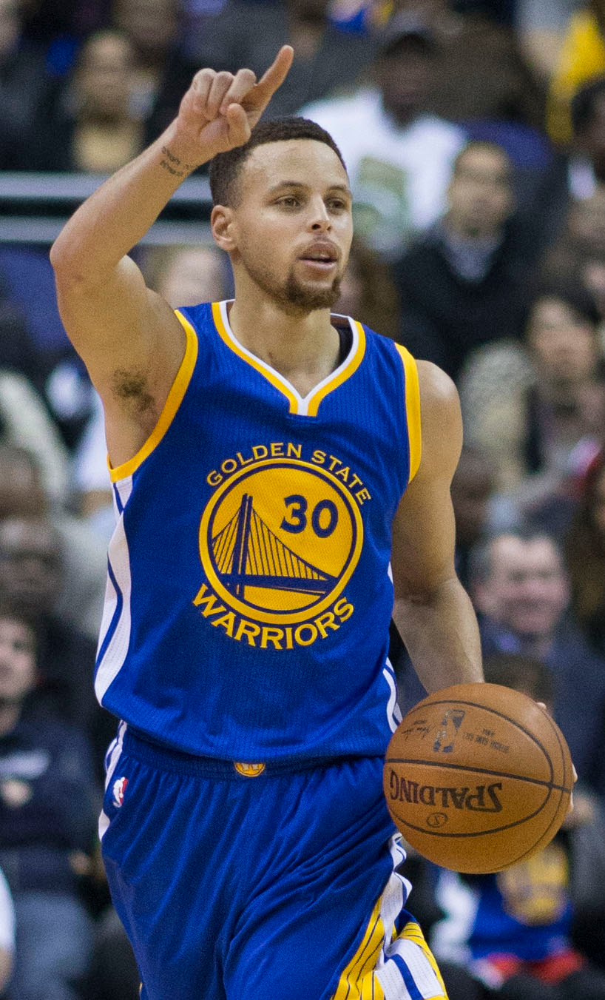
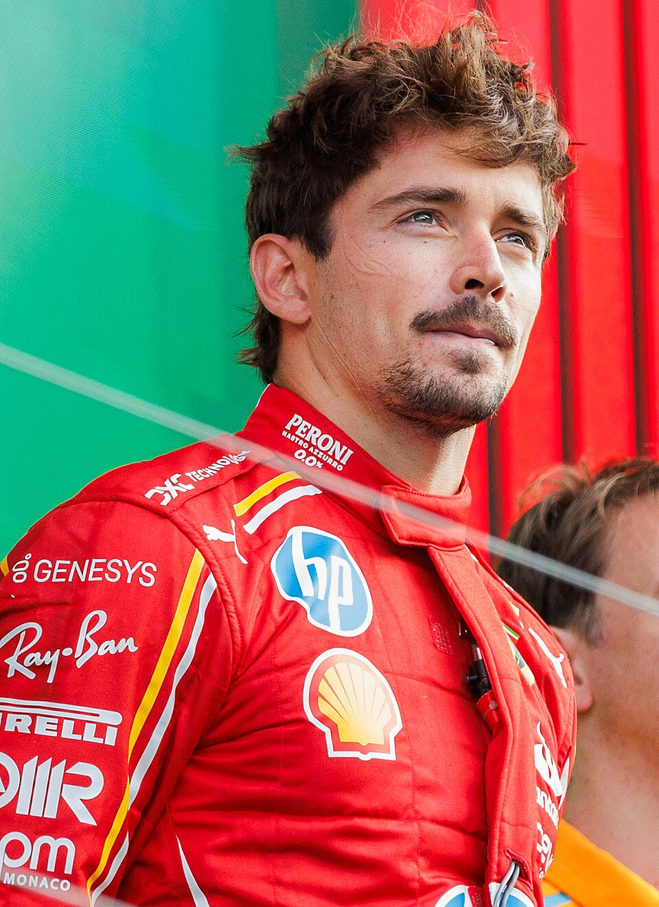

DIGITAL IDYEAR_12
ChefZC_YEAR 12 / IB 学生
- 昵称
- ChefZC
- 坐标
- 迪拜，阿联酋
- 探索中
- AI 与神经网络
< student />ChefZC.
[ YEAR 12 · IB 学生 · 迪拜 ]
保持热忱，保持热爱。
在迪拜读 IB 的高中生。
热爱篮球与赛车，也喜欢折腾 Agent、探索 AI。
迪拜 / 阿联酋VIVA LA VIDA
01 / 一点关于我
# 你好，再正式认识一下。
我是 ChefZC，一名在迪拜生活的 Year 12 高中生，目前在 GEMS Wellington International School 攻读 IB。
我对生活充满热爱和向往：想去看广阔的远方、世界的美景，也想认真感受眼前的美好。篮球、赛车、画画和书法，是生活里让我投入其中的事；电脑硬件、AI 趋势和 Agent，则让我一直想弄明白「它是怎么做到的」。
未来，我想成为计算机工程师，或者空气动力学设计者。
一边学习，一边把热爱变成自己的方向。
02 / 我的热爱
球场、赛道，还有脑海里的新想法。

篮球 / NBA / 2K
最喜欢的球星是库里。喜欢自己上场打球，也爱看 NBA；离开球场，就在 2K 里继续。

赛车 / F1 / 勒芒
从 F1 到勒芒，赛车总能让我投入其中。最喜欢的车手是勒克莱尔，也向往有一天参与空气动力学设计。
喜欢折腾 Agent、追踪 AI 新闻和趋势。目前正在学习神经网络，常用 Codex，也开始用 ChatGPT Pro 探索更多可能。
画画，也写书法。用线条和笔墨，留住生活里喜欢的东西。
向往广阔的世界、美丽的风景，也珍惜眼前细小而真实的美好。
03 / 我的音乐宇宙
喜欢的声音，反复听也会心动。
全部歌手
这次没有找到，试试别的歌名。
歌手照片、歌曲与专辑封面来自 QQ 音乐，版权归各权利人所有。歌曲为精选代表作，非账号歌单同步。
GOOD MUSIC. GOOD LIFE.04 / 我的数字工作台
研究硬件，也用它们学习和探索。
512 GB
256 GB
05 / 一路走来
06 / 保持联系
关于 AI、篮球、赛车，或是一个有意思的新想法。
聊过了我，再看看作品。
Folio 1.0 与 NBA After Hours 已上线。一间安放模组的工作室，一座属于自己的篮球场。
Stephen Curry: Keith Allison · Wikimedia Commons · CC BY-SA 2.0. Commons crop: TBMNY / Bagumba.
Charles Leclerc: Steffen Prößdorf · Wikimedia Commons · CC BY-SA 4.0. Commons crop: Mb2437.
Display crops, colour treatments and overlays; adapted photographs retain their respective CC BY-SA licences. Icons: Lucide (ISC) and Tabler (MIT).